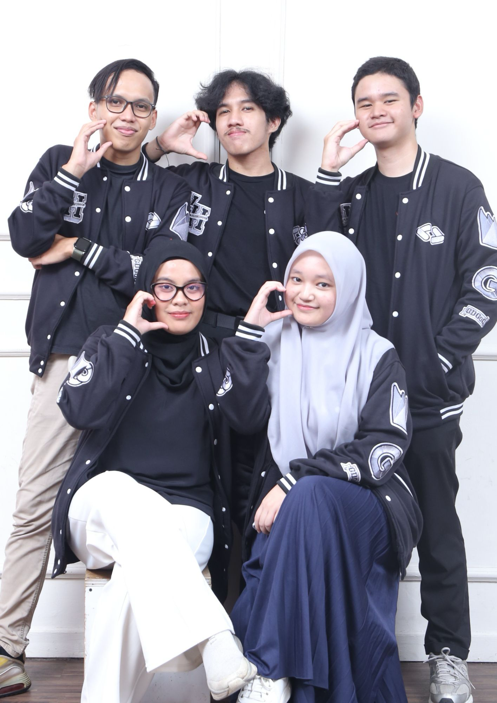

August 2024 - July 2025
As the Graphic Designer of Google Developer Groups on Campus Hasanuddin University, I designed visual media for tech events such as workshops, seminars, and community meetups, delivering user-friendly and visually compelling materials that aligned with event themes and audience preferences. I collaborated with cross-functional teams to develop creative social media campaigns and promotional content that increased community visibility and participation. Additionally, I contributed to strengthening the GDG on Campus brand identity by adhering to design guidelines while integrating innovative visual storytelling techniques.
Key Achievements:
- Designed and delivered several visual assets including T-shirt, totebag, landyard, etc. that enhanced the professional appeal of events.
- Increased event attendance by 20% through effective design and promotional campaigns.
- Boosted social media engagement by 30% with visually impactful content.
- Improved brand consistency across platforms, strengthening GDG on Campus’s recognition within the tech community.